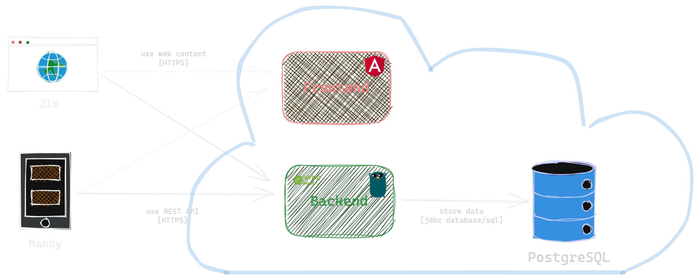
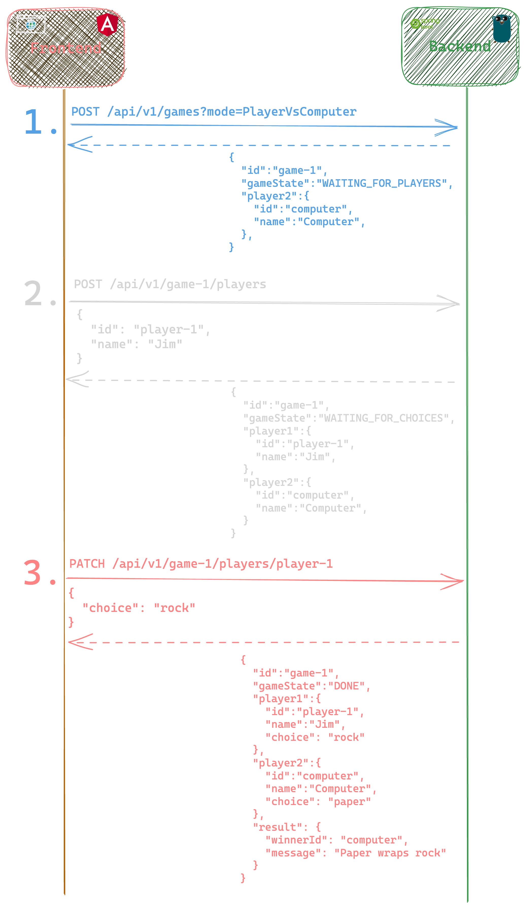

Rock, Paper, Scissors
What's
cloud-native?
There is no cloud.
It's just someone else's computers.
Cloud native Technologies
empower to build and run
scalable applications
in modern, dynamic environments.Cloud Native Computing Foundation
The 12-Factor-App and Beyond
- One Codebase, One App
- API First
- Dependency Management
- Design, Build, Release, Run
- Configuration, Credentials and Code
- Logs
- Disposability
- Backing Services
- Environment Parity
- Administrative Processes
- Port Binding
- Stateless Processes
- Concurrency
- Telemetry
- Authentication and Authorization
Getting Started
Project Overview
Player vs. Computer API Calls
>_ Demo
Split into Session
Go Session
Prerequisites Go Session
- Editor Visual Studio Code
- Postman
- Clone github.com/crossnative/cloudland-rps,
checkout branchgo-start
Go
- Go Compiler
- optional: air for hot reload
go install github.com/cosmtrek/air@latest
Frontend
First Steps in Go
- Get up and running
- Complete REST API
- Make Cloud Native or add your Features
Go Cloud Native Path
Cheatsheet Middleware for Logging and Recovery
Using middlewares from chi router or others.
r := chi.NewRouter()
r.Use(middleware.Logger)
r.Use(middleware.Recoverer)
- What does the recovery middleware do?
- Bonus: How can you set a request timeout using middleware?
Cheatsheet Configure Port
from Environment Variable
Using the Standard Library
func main() {
http.ListenAndServe(fmt.Sprintf(":%v", os.Getenv("PORT")), r)
}
Using envconfig
github.com/kelseyhightower/envconfig
// Application Configuration
type Config struct {
Port string `envconfig:"PORT" default:"8080"`
}
func main() {
http.ListenAndServe(fmt.Sprintf(":%v", c.Port), r)
}
Cheatsheet Handle Errors properly
Using the Standard Library
if err != nil {
http.Error(w, "Oops, that went wrong!", http.StatusInternalServerError)
return
}
Using Problem for HTTP APIs
Use rfc7807 withschneider.vip/problem
if err != nil {
problem.New(
problem.Wrap(err),
problem.Status(http.StatusInternalServerError)
).WriteTo(w)
return
} Cheatsheet Run in Container
# 1. RPS Builder
FROM golang as builder
WORKDIR /app
ADD . /app
RUN CGO_ENABLED=0 go build -ldflags="-w -s" -o build/rps .
# 2. RPS Container
FROM alpine
COPY --from=builder /app/build/rps /usr/bin/
EXPOSE 8080
ENTRYPOINT ["/usr/bin/rps"]
Cheatsheet Add a Health Check
Seegithub.com/hellofresh/health-go/v5.
// Register Health Check
h, _ := health.New(health.WithChecks(
health.Config{
Name: "db",
Timeout: time.Second * 2,
SkipOnErr: false,
Check: healthPgx.New(healthPgx.Config{
DSN: config.Db,
}),
},
))
// Register Health Check Handler Function
r.Get("/health", h.HandlerFunc)
Cheatsheet Use PostgreSQL for Storage
- SQL Tutorial with Go
- PostgreSQL Driver PGX
- Sample application
offer
Cheatsheet Cloud Deployment
Example Deployment for render
services:
- type: web
name: backend-go
env: go
plan: free
rootDir: backend-go
buildCommand: go build -o rps .
startCommand: ./rps
Cheatsheet OpenTelemetry
Use otelchiSpring Session
Prerequisites Spring Session
- Install some IDE (e.g. IntelliJ or Visual Studio Code)
- Install Postman
- Install Java JDK (e.g. Temurin)
- Clone github.com/crossnative/cloudland-rps and checkout branch
spring-start
Frontend
- Node.js (npm is included)
First Steps Spring Session
- Run local Frontend together with example backend
https://backend-spring.onrender.com/api/v1 - Build and Run Spring Backend
- Implement REST API
- Make Cloud Native or add further Features
Spring Cloud Native Path
Cheatsheet Error Handling
Cheatsheet Run in Container
With Buildpacks run./mvnw spring-boot:build-image -Dspring-boot.build-image.imageName=myorg/myapp
Feature Ideas Rock, Paper, Scissors
- Add a leaderboard with top 10 Players
- Make Game realtime (e.g. WebSocket, ...)
- Enhance to Rock, Paper, Scissors, Spock, Lizard
- Add rooms people can play many Games in
- ...
Interesting Links